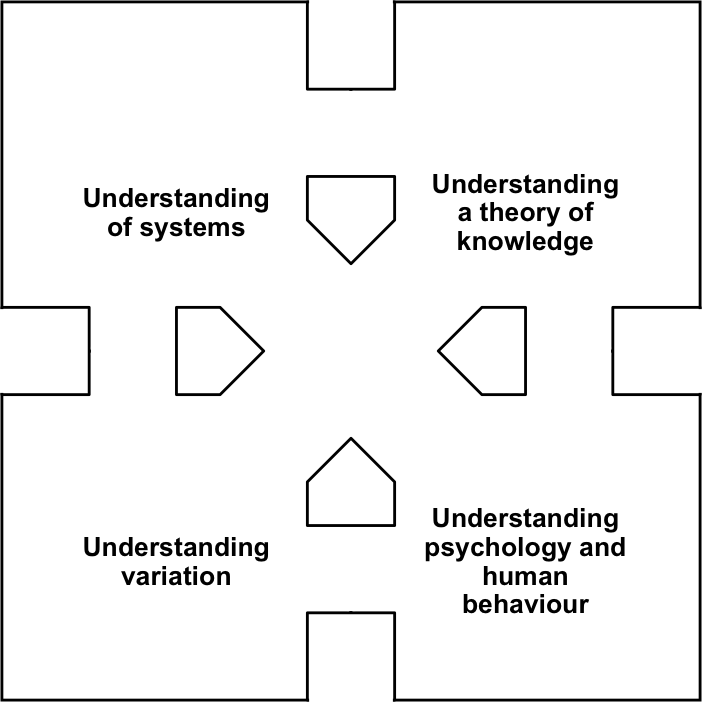

Day 1: The ‘Overture’ and the Deming Story
DAY 1 (afternoon): THE DEMING STORY
Early 1900s: The story begins
William Edwards Deming was born on 14 October 1900. (Why “Edwards” rather than “Edward”? Edwards was his mother’s maiden name.) Times were hard, and the family moved home twice before the youngster was seven years old, in search of land and work.
After graduating from high school, the young man entered the University of Wyoming. He majored in Electrical Engineering and received his Bachelor’s degree in 1921. He stayed there for a further year, studying Mathematics and teaching Engineering. He was then invited to teach at the Colorado School of Mines, and obtained a Master’s degree in Mathematics and Physics from the University of Colorado in 1924. He gained his doctorate in Mathematical Physics from Yale in 1928.
The 1920s: New statistics in manufacturing
I have mentioned the 1920s several times during the Overture, and so you know what’s coming here. Yes: Dr Walter Shewhart at the Western Electric Company, and understanding variation. How did Deming get involved with Shewhart at this early stage? The answer is simple: by great good luck! But, without that great good luck, the industrial history of the world during the 20th Century may have turned out very differently.
Just like many students these days, Mr Deming (as, of course, he still was at the time) had to “work his way through college”: he needed to find temporary jobs to raise money in order to finance his studies. And in the summers of 1925 and 1926 he just happened to obtain temporary employment at the Western Electric Company in Chicago. He heard about Shewhart’s work, he met him, he learned from him, and what he learned from Dr Shewhart turned out to form the foundation-stone upon which the whole of his life’s work was subsequently built.
Shewhart, in so many ways, became Deming’s mentor. A mentor is a priceless asset: someone in whom we can trust, and from whom we can thus confidently learn. Deming had found his mentor, and he repeatedly attributed the source of much of his most important learning as being Walter Shewhart. Not just for the statistical aspects of the Deming philosophy but much else besides, including systems thinking, operational definitions, the well-known PDSA (Plan-Do-Study-Act) improvement cycle (which many call the Deming Cycle but to which he always referred as the ” Shewhart Cycle), and much more. We shall learn about all of these topics during the course.
But let me quote Deming directly from his dedication in the 1980 reprint of Shewhart’s famous 1931 book: Economic Control of Quality of Manufactured Product. He said: “Study of Dr Shewhart’s great book … will bring better living to people the world over”. And he praised certain chapters of that book as being “a masterpiece on the meaning of quality”. It is notable that, whereas many speak of Deming in such terms as “the father of quality”, he referred to Shewhart in wholly similar terms. “To Shewhart,” he continued, “quality control meant every activity and every technique that can contribute to better living … His book emphasises the need for continual search for better knowledge about materials, how they behave in manufacture, and how the product behaves in use. Economic manufacture requires achievement of statistical control in the process and statistical control of measurements. It requires improvement of the process in every … feasible way.”
Even today, most people’s interpretation of that word “quality” is still hopelessly narrow and limited compared with Shewhart’s understanding in his great book from so long ago.
Because of their importance, let us learn something of the circumstances in which Shewhart’s great discoveries took place, as that will help us to understand much better the prime purpose of those discoveries.
People in the Western Electric Company at that time were heavily involved in the development of telephone technology and related equipment. They were investing massively to increase their knowledge and ability. Their improvement efforts paid handsome dividends for a considerable time. But gradually that improvement activity began to “run out of steam”: it was achieving less and less. They were still working as hard if not harder than before, spending much money, time, effort, and probably emotion (for improvement can get to you like that) on trying to make things better. Deming told the story during a presentation in Versailles, France in 1989 (which has already been introduced in the optional excursion into the Appendix from page 10). Here are two extracts (part of which you’ve already seen on page 18) from his account, and from which we shall quote more fully on Day 3:
“ … the harder they tried, the worse were the effects. The more they tried to shrink variation, the larger it got. They were naturally also interested in cutting costs. When anything bad occurred, they went to work on it to try to correct it. A noble aim. There was only one little trouble—their noble efforts did not work. Things got worse.”
As he explained it just a little later in his presentation:
“ … they were failing to understand the difference between common causes and special causes, and that mixing them up makes things worse. … Sure we don’t like things which go wrong—but if we wade in at them without understanding [of the two types of variation] then we make things worse.”
(The adjectives “common” and “special” in this context are defined on the next page.) So, with its purpose and ability to differentiate between the two types of variation, Shewhart’s control chart was actually created to provide guidance for improvement. What kinds of interpretations of data, and what kinds of resulting actions, will help you to improve? But, to many people, that’s still a new emphasis. Most people who use the control chart at all use it only for monitoring purposes, as a sort of early-warning device. If the data lie within the control limits which are the crucial feature of the chart, and continue to do so, all is regarded as being well, and people may relax and think of other things. But then if, say, the process starts to drift in some way, the control chart signals the onset of trouble, so that corrective action may be taken before the trouble becomes too serious. Now, I’m not saying that it’s wrong to use the control chart in that way. Of course not: it fulfils that role very well. I’m simply saying that if that’s all you are using the control chart for then you’re missing out on the main purpose for which Shewhart created it. His main purpose was to provide guidance for the type of actions that will lead to improvement, to making things better—not just to keeping things as they are, which is all that the monitoring use of the control chart provides and, indeed, all that it is intended to provide.
This difference in understanding of purpose is fundamental. Deming’s life’s work was all about providing guidance for decisions and actions which will lead to improvement, and to stop doing things which cause harm and make things worse. Shewhart’s breakthrough was the first massive stride on that great journey.

Shewhart’s breakthrough
Earlier I described Shewhart’s work in the 1920s as a “crucially important breakthrough” in understanding variation. It would be unfair of me to express it in such radiant terms without providing you with a more comprehensive survey of that main theme from the Overture, along with some of its implications. But beware, these will just be the “bare bones”—and so it’s worth pointing out two facts about a skeleton: it usually (a) contains quite a lot of bones and (b) does not look very friendly! So, if you’re at all uneasy with some of what you read here, please be patient—I will soon provide you with plenty of flesh to put on those bones, particularly during the next two days of this course, and I think you’ll find it looking far more friendly with the flesh attached! (Stats-level 00 students—you do need to carefully read through what follows here!)
So here are ten rather sizable “bare bones”. You’ve seen several fragments already, but hopefully this will join some of them together as well as adding plenty more. Take it steady—there’s a lot here.
Good quality of a product or service surely implies that it can be described in such terms as reliable, dependable, predictable—no nasty surprises. The quality of a service or product depends on the processes used to make the product or carry out the service, and the management of those processes. The adjectives just used to represent good quality can largely be summed up by “low variation”. Recall the use of “uniformity” in the inscription on the Deming Medal (today’s page 2): uniformity implies very low variation! Processes that are exhibiting high levels of variation need to be improved: they are unreliable, not dependable—full of nasty surprises. Their variation needs to be reduced.
Variation cannot be reduced if it is not understood. Shewhart’s “breakthrough in understanding variation” was that, fundamentally, processes suffer from just two types of variation. Correspondingly, there are two general types of causes of variation.
One type of variation is inherent to the process and the circumstances in which it is being operated—the way it has been designed, built, set up, the way people have been trained to use it, and the environment in which it operates, including physical and cultural matters and management style. So these are all factors that are present for the relatively “long haul”—they are not just temporary (unless something is done about them). Shewhart called them “constant” causes—because they are constantly present. A careless mathematician might possibly misinterpret that adjective: in Mathematics, something being “constant” means that it is “not varying”, so the careless misinterpretation might be that they do not cause any variation! That’s obviously wrong: the truth is that they are one of the two types of causes of variation. The valid inference is instead that the nature of the resulting variation is unchanging because the causes of that variation are effectively unchanging. Deming referred to Shewhart’s “constant” causes as “common” causes of variation.
Whereas the common causes are always there (until the process gets changed in some way— hopefully improved!), the process’s variation may also sometimes be affected by additional causes that are not there all the time—perhaps some one-off happenings or a temporary change in something which has an important influence on how the process behaves. Of course, such additional causes may occur quite often, but if their effect is so small as not to materially affect the way the process behaves then obviously we can’t do much about them, and don’t need to. We can only notice them if there is something to be noticed, i.e. if we can recognise that the nature of the variation changes. Shewhart referred to such additional causes—ones which do noticeably affect the variation—as “assignable” causes of variation; Deming called them “special” causes.
Processes that are not suffering from such special causes, i.e. are exhibiting variation whose nature does not noticeably change, are said to be “in statistical control” or, more simply, “stable” or “predictable”. The “prediction” is that the nature of the variation will continue to be effectively the same into the future unless special causes arrive on the scene to change matters.
Processes which are being affected by special causes are said to be “out of statistical control” or “unstable” or “unpredictable”—we cannot now predict with any justification how the variation will behave in the future. That will remain the case until the special causes are identified and either removed or, at least, have their effects negated or mitigated in some way.
There are obvious ramifications regarding the vital matter of process improvement. If a process is out of statistical control then special causes are affecting it and it is necessary to identify those special causes and deal with them first. Otherwise, if you try to improve the process, how could you tell whether a subsequent change in the nature of the variation is actually due to the improvement attempt rather than to special-cause effects?
On the other hand, if the process is in statistical control but you don’t like the amount of variation it is producing, the only way to reduce that variation is to improve the process itself. In other words, the need is to tackle some of the “long haul” common causes which otherwise will, of course, remain there and continue producing the amount of variation that you don’t like.
The purpose of Shewhart’s control chart is to help us to discriminate between the two states: is the process in or out of statistical control? Without it, it’s often not as easy as it might sound.
Quality tools and techniques, and the thinking underlying them, are often regarded as relevant only on the manufacturing “shop floor” and in administration processes and paperwork and the like. This is a bad mistake. They are, of course, very important in such contexts. But in a table on page 27[37] of his final book: The New Economics for Industry, Government, Education, Dr Deming made the observation that only 3% of the potential gains from the “statistical control of quality”, i.e. acting based on understanding of the causes of variation, come from such areas. (Recall from page 12 that those page numbers refer to page 27 of the Third Edition and page 37 of the Second Edition.) He described the application of the statistical control of quality to overall business strategy and companywide systems such as personnel, training, purchasing, legal and financial matters etc, i.e. to the management of the organisation, as:
“Here are the big gains, 97%, waiting.”1
If the 3% is big (and it is), the 97% is massive.

1930s–1940s: New statistics in non-manufacturing
So it did all start with some new statistical thinking and methods in a manufacturing context. Regrettably, a few generations later, some people still seem to think that was all Dr Deming’s work was about, and all that it is relevant to. Nothing could be further from the truth. For a start, apart from his temporary work at Western Electric, Deming was never employed in a primarily manufacturing environment. His first permanent employment was in USDA, the United States Department of Agriculture (OK: still “manufacturing” of a kind, but obviously a rather different type). His appointment there was as a Mathematical Physicist—that was still his main area of expertise back then. Twelve years later, in 1939, he was appointed Head Mathematician and Adviser in Sampling at the National Bureau of the Census—again, hardly manufacturing! His work there, particularly with the 1940 American Census, turned out to be supremely successful, and it was in this capacity that he first attracted some international attention. In fact his first visit to Japan, soon after the end of the Second World War, was primarily to work with the Japanese Census.
1950s–1960s: “The theory of a system, and cooperation”
Does that heading seem familiar? I’ll remind you a little later of where you first saw it.
A further visit to Japan, again to work with the Census, was planned for the early summer of 1950. By this time, Dr Deming’s name and reputation had become known to Ken-ichi Koyanagi, Managing Director of the Union of Japanese Scientists and Engineers. Accordingly, Koyanagi issued the all-important invitation for Dr Deming to also teach concepts and methods for the achievement of quality in industry. During that visit, his teaching not only reached hundreds of engineers, plant managers, research workers, and so on, but it also reached top management. A particularly famous meeting was held in July 1950 with the 21 top industrialists of the country present, a meeting later described as the occasion at which Dr Deming had in that one room ” 80% of the industrial capital in Japan right there in front of him. Deming regarded that as his breakthrough: that the top people came to listen and learn from him.
{kind=link}
But there was another important reason why the Japanese lis- tened to, and learned from, Deming. Koyanagi expressed it well on page 8 of The Deming Prize (1960):
“Most of the Japanese were in a servile spirit as the vanquished, and among Allied personnel there were not a few with an air of importance [which I imagine was something of an understatement]. In striking contrast, Dr Deming showed his warm cordiality to every Japanese whom he met. … His high personality deeply impressed all those who learned from him and became acquainted with him. … The sincerity and enthusiasm with which he did his best for us still lives and will live forever in the memory of all concerned.”
But what did the Japanese learn from him? How did he do his best for them? Was it just “Statistics”? That is what some well-known writers claim. For example, in the Sunday Times (London, 14 February 1988), Tom Peters asked: “Should you follow W Edwards Deming, father of the Japanese quality revolution, through Statistical Process Control?”. Important though SPC is, I think it must have taken a little more than that! First let me show you a slightly longer version of the entry in Dr Deming’s diary that I quoted earlier (from page 6 of Ceil Kilian’s superb biography The World of W Edwards Deming[^f]):
“The lectures are being held at the Japan Medical Association in Ochanomizu. … Over 600 men had applied, and the limit was finally over-strained to 230. Professor Masuyama and assistants will teach the statistical control of quality in the afternoon. I shall teach during the forenoon the theory of a system, and cooperation.”
[my italics]. There you are—that’s where this section’s heading came from: his own diary. Deming was content, on this occasion and presumably others, to leave the teaching of Statistics to his assistants, while he concentrated on the really important matters.
What did he mean by “the theory of a system, and cooperation”? There follows an abbreviated form of his own seven-point summary of his teaching in Japan during that summer; for the full version see The World of W Edwards Deming pages 24–27.
The two diagrams shown on the next page, or close variants of them, will be seen again, particularly on Days 9 and 4 respectively. Their importance is indicated by the fact that they appear (one of them in slightly expanded form) as early as page 3[pages 3–4] in Out of the Crisis—right up front! I shall generally refer to the “flow diagram” which heads Deming’s list here as the “Organisation Viewed as a System”. More than once I heard Dr Deming describe this as the most important diagram that he had ever drawn throughout the whole of his life.

A Summary of Teachings to Top Management and to Engineers in Japan
1. The flow diagram shown here was on the blackboard at every conference with top management:
2. Quality is determined by the management. Outgoing quality can not be better than the intentions of the management. (Do you remember “Quality is made at the top” from the Overture?)
3. The consumer is most important. What will help him in the future? Strive for long-term relationships with your customers.
4. Your supplier is your partner. Make him your partner. Work together on continual improvement of quality. Develop a long-term relationship with a supplier in a spirit of mutual trust and cooperation. Supplier and customer will both win.
5. Chain reaction from improvement of processes:
An updated version of the Chain Reaction appears on Out of the Crisis page 3 (both editions). There the final three steps stay the same. The first step becomes simply “Improve quality”. But the second step is greatly expanded to show why costs decrease: “Costs decrease because of less rework, fewer mistakes, fewer delays, snags; better use of machine-time and materials”. And a new step is inserted before “Capture the market …”: “Productivity improves”.
6. Need for trust and cooperation between companies.
7. Development of trust and respect.
I think you will see some common themes running through that list. And it’s hardly just Statistics! The importance of the complete content of Deming’s list, as opposed to “just Statistics”, cannot be overemphasised. There is a great flavour of “the theory of a system, and cooperation” throughout. And, in contrast to a widespread misconception about Deming’s work, it’s hardly just for manufacturing companies!
So what were some of the consequences of Deming’s teaching to the Japanese in the summer of 1950? Let’s take the short term first. I’ll move to Chapter 7: “What Happened in Japan?” in Mrs Kilian’s The World of W Edwards Deming. This is from page 77 of her book:
“Japanese manufacturers took those arguments seriously to the point of doing something about them with concerted effort. A little fire here, and a little there, would be too slow. Concerted effort meant cooperation amongst competitors, assistance to vendors, and—probably for the first time in Japan—immediate attention to the demands of the consumer, and need for consumer research on a continuing basis, with feedback for redesign. Results were spectacular, even after only one year, especially in productivity per man-hour, with little new machinery.”
And in the longer term? Well, as was reported in ” The Deming of America:
“In 1960, the Prime Minister of Japan, acting on behalf of Emperor Hirohito, awarded Dr Deming Japan’s Second Order Medal of the Sacred Treasure. The citation on the medal attributes Japan’s industrial rebirth and its worldwide success to W Edwards Deming.”
Some of the matters raised in Deming’s “Summary of Teachings” will be seen to have parallels in the Major Activity at the end of this afternoon. Before that, let’s continue with the story. But to where?
{kind=link}
The 1970s: The wasted years
I well remember the occasion when I was one of a group of some 50 people enjoying a study weekend with Dr Deming at the Ashridge Management College in the UK, immediately following his London four-day seminar in 1988. Naturally, during that weekend, we got him talking about his life. He said a lot about the 1950s and, to an extent, the 1960s. But when we asked him about what had happened in the 1970s, he hesitated and then muttered: “Oh, nothing much.” He just didn’t want to talk about that time.
We know that he was still working hard, lecturing regularly at New York University, still publishing research papers, visiting Japan for the annual Deming Prize ceremonies (though I do not know how regularly). Sure. But the Japanese had effectively stopped learning anything significant from him years earlier. And there was no sign that the rest of the world, including his home country, America, had any interest in what he could do for them. Even in The World of W Edwards Deming, a section listing his “International Activities” has many entries for the 1950s, fewer for the 1960s, and then only two for the 1970s: that he lectured in Argentina in 1971 and, interestingly, that he was a consultant to the China Productivity Centre in Taiwan in 1970 and 1971. And then: nothing. A vacuum.
Wasted years. But wasted years which, as we saw on page 2, thankfully ended when Bill Conway sought him out in 1979.

The 1980s (first half): The West awakens
Dr Deming’s involvement with the Nashua Corporation began just early enough to become known to the NBC television producer, Clare Crawford-Mason, in time for her to include in the documentary If Japan Can, Why Can’t We?, first screened in June 1980. That was the breakthrough in the West (almost exactly 30 years after the breakthrough in Japan). As Mrs Kilian later wrote on page 18 of her biography:
“American industrialists who watched the programme not only grasped more fully the enormity of the problems that they were facing, but they also realised that answers to their dilemma were available. Perhaps most importantly, W Edwards Deming was introduced to the audience as the man with effective answers. It was an introduction that would change his life irrevocably.”
And, she might have added, the lives of countless others.
Compared with what we now know about the matters which Dr Deming was teaching in Japan 30 years earlier, If Japan Can, Why Can’t We? had a strangely narrow emphasis: Deming was mainly back to talking about statistical methods in a manufacturing context—just where Shewhart’s work had been 55 years earlier! Some considerable time later, when I had begun to appreciate the much greater breadth and depth of his teaching, I asked him why he had reverted to such a narrow focus in that TV programme. His answer came without hesitation:
“Because, Henry, I thought that, at the time, that was all that people would be able to take.”
He had judged that the Americans would not be able to stomach what the Japanese had been learning from him 30 years earlier: he needed to tread more carefully with them. Some new Statistics in manufacturing: yes, perhaps Americans could cope with that in 1980. He was deliberately using that narrow focus as a “thin end of the wedge”, hoping that, having made a start, both the breadth and the depth could grow.
But, however hard he tried to contain himself, his frustration with American management would often come to the boil. It was now 30 years since the “Japanese miracle” had begun, and the Americans were still so wrong and still so slow to learn! In a powerful video on Management’s Five Deadly Diseases (produced in 1984 by Encyclopedia Britannica), Dr Deming ended with these words:
“With a storehouse of unemployed people—some willing to work, a lot of them willing to work, with skills, knowledge, willingness to work; and people in management unable to work through the merit system, annual rating of performance, not able to deliver what they’re capable of delivering. When you think of all the under-use, abuse, and misuse of the people of this country, this may be the world’s most underdeveloped nation. Number One—we did it again! We’re Number One … for underdevelopment. Our people not used, mismanaged, misused, and abused, and under-used by management that worships sacred cows: a style of management that was never right, but made good fortune for this country between 1950 and 1968 because the rest of the world, so much of it, was devastated. You couldn’t go wrong, no matter what you did.
Those days are over, and they’ve been over a long time. It’s about time for American management to wake up!”
And so, in 1985, came the first London four-day seminar. As I said earlier, four days had seemed to me an unusually long time for a seminar! But I soon discovered why that length of time made such good sense.
Back then, of course, very few if any people in the audience had any idea of what they were going to hear from Dr Deming. So, from what you already know, you can probably imagine the utter astonishment and incredulity with which many reacted during the first hours of that seminar. Indeed, in those days it was not unusual for maybe 10% of the audience to leave by the end of the first day and not come back! I was rather concerned about that—how would Dr Deming feel? After all, this 84-year-old had flown over to London from his home in Washington DC purely to present this seminar! Was he upset about people leaving early? He just smiled gently at me and, with a little shake of his head, said: “They’re not ready yet.”
Then, during the second day, there was a noticeable change of atmosphere amongst the 90% of the audience that remained. Now there were increasing signs of recognition. Having recovered from the previous day’s shocks, the delegates were beginning to see that much of what they were hearing from this octogenarian, although so different, was making good sense. Many messages from the Experiment on Red Beads (occupying the session between the morning coffee-break and lunchtime on that second day), though initially appearing to be such a trivial exercise, seemed to be striking home. So much of what was wrong about the “current reality” was being exposed, and a picture of a better way was beginning to form. There was still some cynicism, but by the third day there was little evidence of it. And, on the fourth day, people realised that this was an unexpectedly special opportunity for learning that was nearing its end.
And a lot of them didn’t want it to end. Initial thoughts of the need to form the organisation which eventually became the British Deming Association resulted from numerous pleas to me from delegates on the final day of both the 1985 and 1986 London four-day seminars for opportunities to continue learning—because, at that time, in Britain there were none.
The content of the four-day seminars in the mid-1980s is well reflected in Out of the Crisis: with particularly long and deep discussion of the 14 Points and the “Deadly Diseases” of Western management (to be studied here on Days 4 and 5), along with the Experiment on Red Beads (Day 2) and later also the Funnel Experiment (Day 3), and a wide selection of other topics from later in his book.
The 1980s (second half): A new climate
But, by the late 1980s, Dr Deming’s teaching had broadened and deepened. The phrase “A New Climate” repeatedly came into my mind. Just as in Japan more than 35 years earlier, he was now strongly emphasising “Cooperation: Win-Win” (I suspect that it may have been he who coined this now-well-known phrase)—not cooperation for some altruistic, magnanimous purpose but simply so that all concerned could gain, could be better off in all respects than if they carried on in the familiar old mode of conflict and destructive competition.
And he spoke increasingly of the need not just for improvement but for innovation—in process, in product, in service—particularly in a world that is changing ever-faster. How right! And so he would study the kind of management climate in which innovation could flourish. Rather obviously, it would not be the familiar climate of management by fear, conformance, “right first time”, reward and punishment. Most innovation does go wrong, but if management cannot accept wrong innovation, they won’t get right innovation either.
And for a third strong feature of the “New Climate”, I will quote from Dr Deming’s opening words in Doctor’s Orders, Central ITV’s half-hour 1988 documentary. Before he’d been speaking for even 30 seconds, he had come up with what was, to most people, a somewhat unexpected view of the “job of management”.
“Just think what this country could be—think what North America could be—if half the people, even make it 25%, could take pride in their work, could take joy in their work. Things would be a whole lot different from what they are now. Why not give that satisfaction to everybody? That’s the job of management!”
Joy in work? A new climate indeed! We’ll return to these three features of the New Climate on Day 8.
Dr Deming was, of course, now getting quite old—and ill. Indeed, he was developing a collection of medical conditions that would have killed off most people much sooner than they did him. So, whether or not he really admitted it to himself, he must have realised that time was running out. Thus, consciously or unconsciously, he surely knew he must try to develop something that would help those who live after him to better understand and continue to benefit from his life’s work. It was toward the end of 1989 that we first heard what is surely an extraordinary phrase:
1990–1993: A System of Profound Knowledge
Extraordinary, yes—yet valid. This was his attempt, sometimes with the wisdom of hindsight, to summarise the core, the guts, the essence of his whole life’s work. His work is to do with knowledge, understanding, learning—no kidding! And it is profound, it is deep—it’s not superficial. Its implications are also profound. And it is a “system” in an exactly analogous way to how he wanted us to consider organisations as systems, as implied by that 1950 flow diagram which we saw as the first in his “Summary of Teachings” on page 35. In the way that he used the word, a “system” contains many, many components, but its strength lies in the understanding of how all of those components fit together, how they interlink, how they interdepend, how they integrate, and how they may help or hinder each other.
I like very much the representation of Dr Deming’s System of Profound Knowledge shown alongside, constructed by one of my many American friends, the late, great Peter Scholtes. The words differ slightly, but the System of Profound Knowledge comprises four major parts: [A] Appreciation for a System (as just described); [B] Theory of Variation (right back to where it all started with Shewhart’s breakthrough so long ago); [C] Theory of Knowledge (how do we know things, how do we learn things, how do we improve that learning and knowledge?); and [D] Psychology (the understanding of people and the ways they interact with all that surrounds them). This is a very human philosophy. And what is particularly good about Peter’s representation here is that it illustrates so well that, not only are those four massive parts highly important in their own right, again the strength of this system is the way that even they interlink, interrelate and inter-depend. This is a rich legacy.

W Edwards Deming died on 20 December 1993, at his home in Washington where he had lived since 1946, and just ten days after completing his final four-day seminar in California. I would estimate that maybe a quarter of a million people attended his celebrated four-day seminars between 1980 and 1993.
But what of…
1994 and onward: The future
Here I can do no better than largely repeat the closing words of my Preface to the Third Printing of DemDim in 1998:
As the world grows ever more complex, and often more cruel, and as new technology provides opportunities to do greater good but, if misused, can also do greater harm, do we not increasingly need the help of the Deming philosophy—its values, its principles, its logic, its practical guidance? Dr Deming’s work is, I believe, hugely important, literally priceless, literally timeless. It is a real source of help and hope for making a better future, materially, socially, and mentally. That was the purpose of Dr Deming’s life’s work. What better purpose could there be?

INTRODUCTION TO THE MAJOR ACTIVITY
Let’s return to that “theory of a system” which Dr Deming was teaching the Japanese in 1950.
It’s not surprising that there should have been such a change or development of emphasis in Dr Deming’s teaching in the late 1980s. An inevitable consequence of Shewhart’s understanding of the two types of variation is that the vast majority of problems (or, if we think positively, of opportunities for improvement) lie in the common causes—the system, as Deming called it. When things go wrong, the fault rarely lies in individuals. The fault lies wholly or primarily in the system: the environment, the circumstances, the working conditions, the “company culture” within which individuals live, work, try to succeed, try to survive—yet so often a culture which repeatedly and consistently sabotages those aims and desires.! ! There is a pertinent change of detail in Out of the Crisis from Deming’s earlier teaching. In If Japan Can, Why Can’t We?, the narrator Lloyd Dobyns states: “But one part of Deming’s programme is not likely to please them [management]. He insists that management causes 85% of all the problems.” This relates to an observation from Dr Joseph Juran many years earlier concerning the relative prevalence of the two types of variation. But by 1986, on Out of the Crisis page 270[315], Deming was instead saying:
“I should estimate that in my experience most troubles and most possibilities for improvement add up to proportions something like this:
94% belong to the system (responsibility of management)
6% special.”
And toward the end of his life he was ruminating on the figures 98% and 2% respectively.
Whichever figures we quote, the fact is that Deming’s thinking, as a natural consequence of Shewhart’s thinking on the two types of variation, leads to a vast change of emphasis from what is still commonplace in so much of modern management and government. It is still commonplace, maybe increasingly so, to be focused on blame or praise, punishment or reward, judgment—of the individual. Deming had come to realise that this focus is entirely misplaced. He had concluded that the vast majority of performance, behaviour, results, whatever, come from the system within which people live and work rather than from the people themselves. And, if that’s true, of course it follows that what can be achieved by such focus on judgment of the individual is trivial, let alone negative, compared with what can be achieved by focusing instead on improvement of the system within which the individual works and lives. This explains in large part why Deming was so critical of managing and judging—especially with reward and punishment involved —related to the achievement or otherwise of numerical targets, quotas, numerical objectives, numerical goals. And performance-related pay, ranking, rating, league-tabling, … . It’s a long list.
But could it be true that the majority of behaviour and performance comes from the system, not the individual? For a long while, I could not get my head around that. And then eventually I started to ponder on such matters as those which follow. I invite you to try this too in the Major Activity which now completes this opening day of our 12 Days to Deming.

Major Activity 1-f (pages 42-44) is also on Workbook pages 5-7.
MAJOR ACTIVITY 1-f
To complete this opening day of the course, take a few minutes to imagine yourself in each of the following ten pairs of opposite environments. Then compare and write down some features describing how you would behave and perform in those contrasting situations.
- Your work is (a) greatly fulfilling and exciting, or it’s (b) dull and demoralising.
- You (a) trust your colleagues at work, or (b) distrust them.
- You had (a) inadequate schooling, or (b) a brilliant education.
- You (a) had wonderful parents, or (b) suffered abuse of various kinds throughout your childhood.
- You (a) trust, or (b) distrust your spouse or other partner.
- You live in (a) a third-world country, or in (b) one of the rich nations.
- You’re living at a time when your country is in a state of (a) peace, or (b) war.
- You are (a) rich or, at least, “comfortably off”, or (b) poverty-stricken.
- You’re in an environment of (a) conflict, competition, winners and losers; or (b) genuine mutual cooperation so that everybody gains.
- Your work is (a) greatly fulfilling and exciting, or it’s (b) dull and demoralising.
This and all other quotations from The New Economics for Industry, Government, Education have been reproduced with the approval of the W Edwards Deming Institute and MIT Press. See https://mitpress.mit.edu/contributors/w-edwards-deming.↩︎